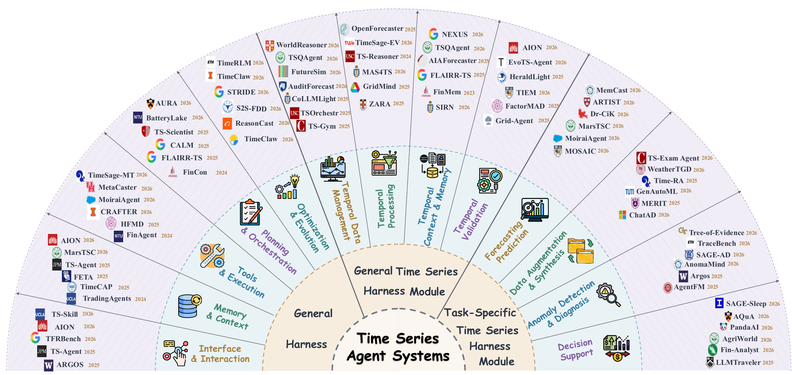

一篇面向时间序列智能体系统构建的综述。
这篇综述要成为构建下一代系统的研究地图。从开发者真正面对的选择开始，而不是从论文清单开始。
交互、记忆、规划、工具调用、执行和反馈，通常可以跨领域复用。
顺序、窗口、单位、数据版本、可用时间和泄漏规则，决定操作是否保持时间意义。
预测、合成、异常诊断和决策支持需要不同的输出、反馈和评价方式。
按照模块能够复用的范围来组织文献。
径向 overview 把 taxonomy 变成一张领域地图。

用需求预测作为贯穿全篇的例子。
定义预测起点、目标、预测窗口、协变量和库存决策。
复用工具调用、记忆、规划、执行和产物检查。
保持历史窗口、可用时间、单位、版本和泄漏边界。
选择模型、修订预测、回测、校准，并连接到后续行动。
分别检查预测质量、执行过程、证据使用和库存效用。
每个 section 回答下一个构建或评测问题。
数值输入、时间指令和工作流策略如何进入模型。
哪些通用运行机制负责执行交互循环和保存状态。
哪些共享模块让时间序列操作保持有效和可审计。
输出契约如何决定流程、反馈和停止规则。
哪些资源可以检验执行、证据、时间有效性和下游效用。
哪些模块在变化的信息环境下仍然无法可靠复用和迁移。
它服务于 taxonomy，是证据载体，不是论文的第一 claim。